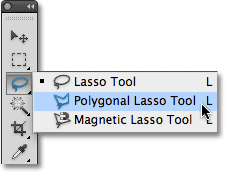
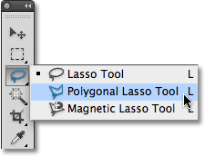
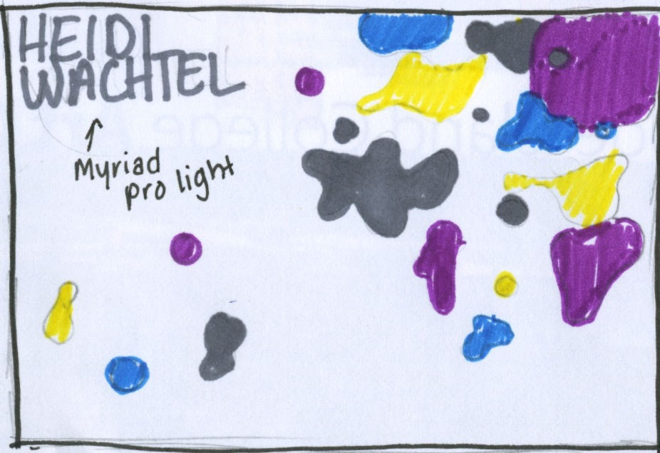
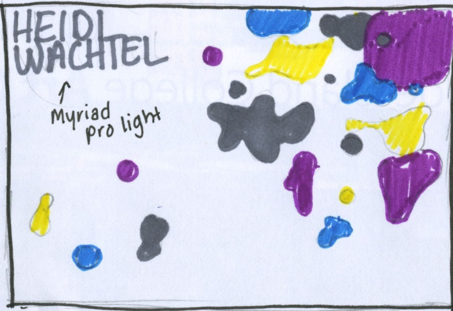

Research
Key Words
Job Ticket
: Documents that show the saved setings.Imposition for printing
: Arrangement of the printed product pages. Simplifying the binding and reducing paper waste. Maximizes the number of pages printed on each impression.Work-and-Turn imposition
:Printed on front and back of page. (how it is flipped)Sheetwise imposition
: Each side of paper is different.Work-and-Tumble imposition
: Paper is flipped top-to-botom when printed.Spot colors vs. process
: Spot color is a mixture of ink in varying colors, can create different tints. Process(CMYK) consists of only layers of specific colors.InDesign: spot colors
: Allows you to choose the pintone color you want to use.
Key Words Cont.
InDesign: align and tabs panels
: Allows you to position text in differnt ways. Alligning panel allows you to distribute and position objects.InDesign: pen tool
: Allows you to draw.Edge Reflow
: responsive web designs: How responsive a webpage is on different sized screensEdge Reflow
: media queriesWeb hosting
(a personal site or you may use EWU's Web Hosting): A website that aids you in creating your own webspace.Image optimization
: Sizing an image correctly so less data has to load.
 

Logo Sketches


 
